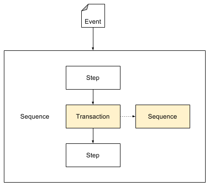

The Transaction service can be used to execute an entire sequence in a single context.
Contrast this to the normal behaviour, where each step has its own execution context.
The target sequence must be specified for a Transaction step. To specify:
